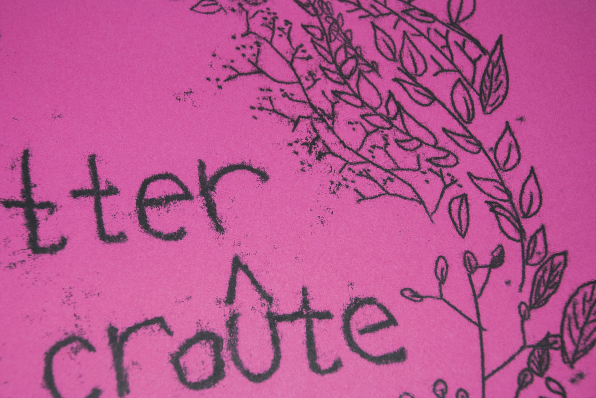
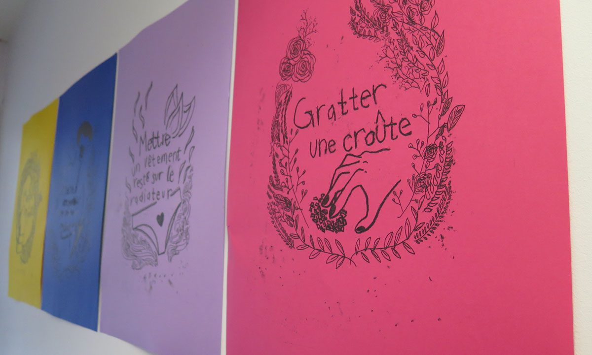
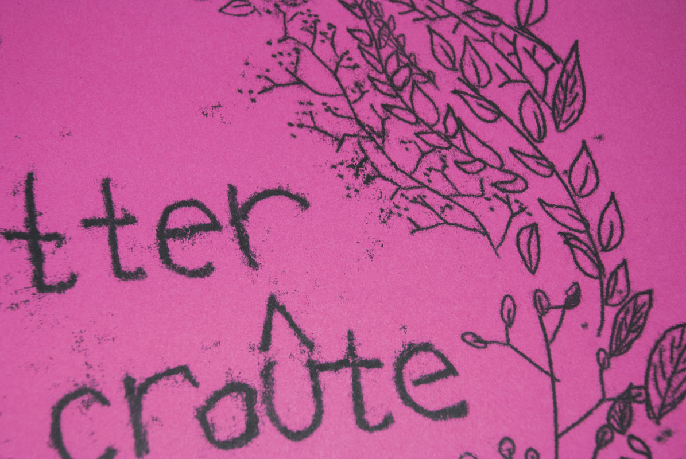
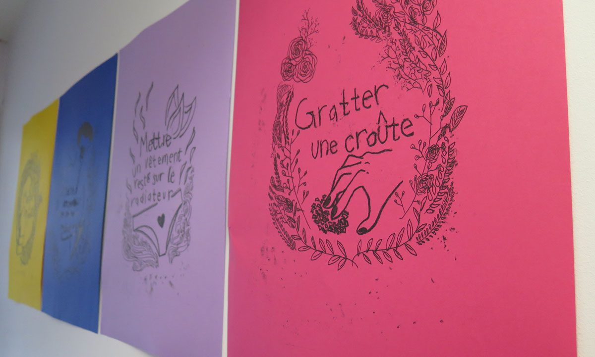
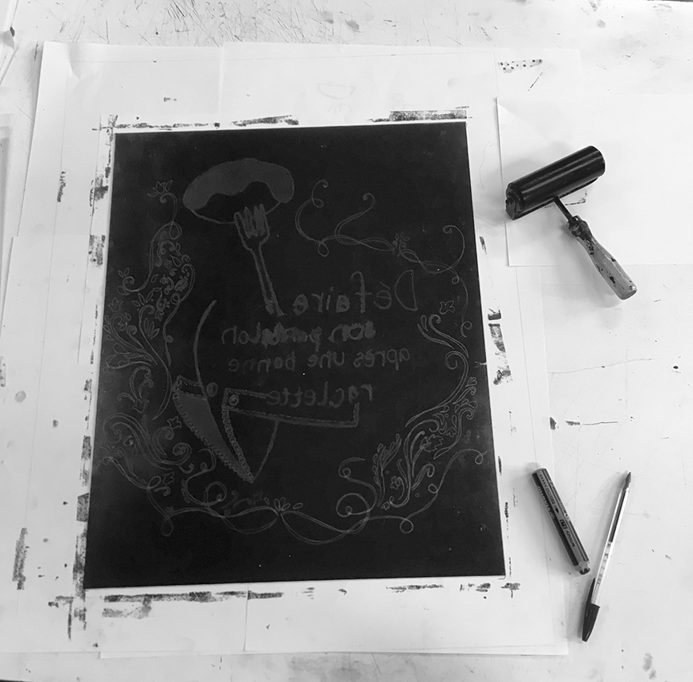
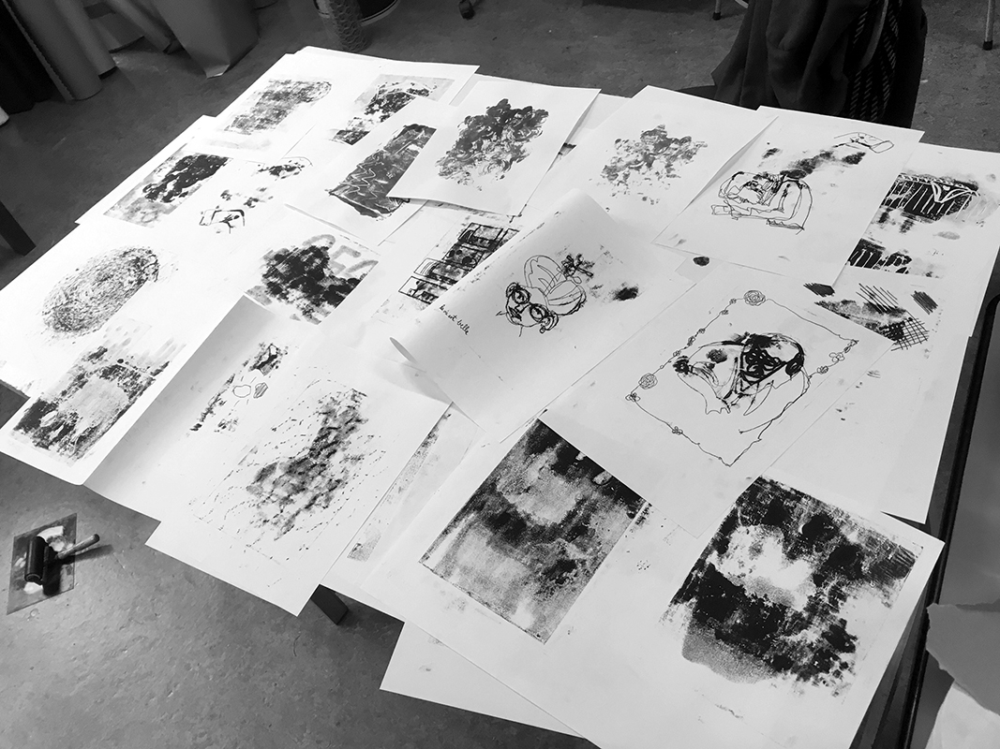

Les outils du monotype
Les premières expérimentations de la technique
Sensations
Les petits plaisirs simples mais unique, que l’on retrouve dans le quotidien, et qui nous procurent des sensations de satisfaction son
si bons et pourtant presque inavouables. Alors oui,
Goûter m’enivre et assouvit mon désir de sucre même lorsqu’il est dix huit heures trente.
Il n’y a rien de plus proche de l’extase que de déboutonner son pantalon après avoir bien mangé.
Laisser ses vêtements sur le radiateur avant de les enfiler procure
la caresse d’un cocon réconfortant.
J’avoue, je ne résiste pas à la crispation puis au soulagement lorsque je gratte une croûte fébrilement.
La technique monotype leur concède leur aspect unique. Même si l’action est répétée, la sensation est différente.
· Monotype (impression unique)
· 2017